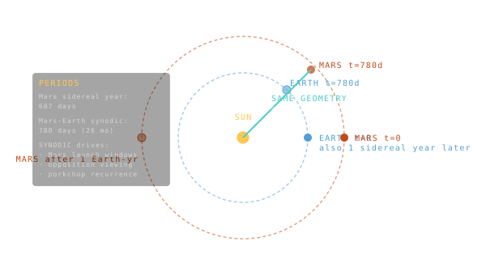

Sidereal vs Synodic Period
Two ways of asking 'how often does this come around again?' — same body, different reference frame, different answer.

101 · zoom in
There are two different answers to the question "how long is a year on Mars?" — and which one you want depends on what you're trying to do.
If you want to know how long Mars takes to make ONE LOOP around the Sun, the answer is 687 Earth days. That's the sidereal period — measured against the unmoving distant stars. It's the geometric truth of the orbit. Vis-viva and Kepler's third law both work in sidereal time.
But if you want to know how often Earth and Mars LINE UP THE SAME WAY (so you can launch a mission), the answer is 780 days — about 26 months. That's the synodic period. Why longer? Because while Mars is going around the Sun once, Earth is going around it almost twice — both planets keep moving. The line-up only repeats when Earth has lapped Mars in the dance.
This is why Mars launch windows appear every 26 months. If you miss one, you wait two years. Every Mars mission you've ever heard of had to time itself to a synodic window — Curiosity in 2011, Perseverance in 2020, the next one in 2026. The synodic period is the heartbeat of interplanetary mission planning.
Sidereal period: time for one full orbit relative to the fixed stars. This is the geometric, Kepler-third-law period — Mars sidereal year is 687 Earth days. Synodic period: time for one body to return to the same position relative to another body, usually as seen from a third. Mars synodic period — time between Mars-Earth alignments — is 780 days, or about 26 months.
The synodic period is what mission planners care about. Earth-Mars Hohmann transfers only work when Mars is in the right place. The next viable launch window appears every 26 months. Miss one, wait two years for another. That's the cadence of every Mars mission ever flown.
Mathematically: `1/T_syn = 1/T_inner − 1/T_outer`. If Earth's year is 1.0 yr and Mars's is 1.88 yr: `1/T_syn = 1 − 1/1.88 = 0.468`, so `T_syn = 2.14 yr ≈ 26 months`. The math is simple; the operational consequence — every mission timeline must respect it — is where it lives in mission planning.
SEE IN THE APP
- /plan Mars launch windows recur every synodic period (~26 months)